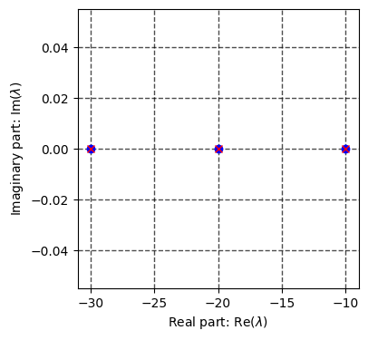
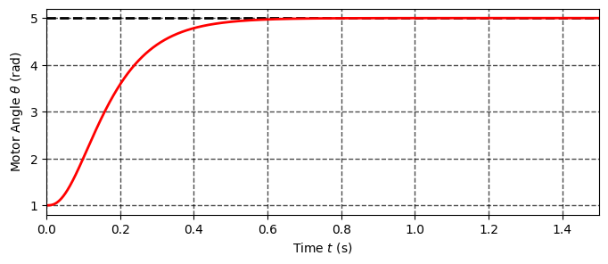
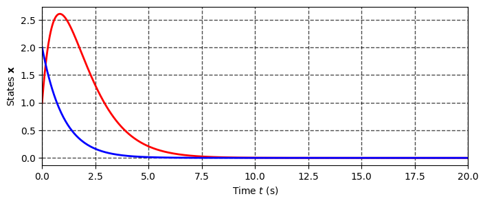

Goals for today:
Once the equlibrium or nominal motion is given, the natural question to ask is that how system will behave nearby.
This question is directly related to so called stability
Various types of stability may be discussed for the solutions of differential equations or difference equations describing dynamical systems. The one practically important type is that concerning the stability of solutions near a point of equilibrium. This may be analyzed by the theory of Aleksandr Lyapunov.
In simple terms, if the solutions that start out near an equilibrium point stay near forever, then is Lyapunov stable. More strongly, if is Lyapunov stable and all solutions that start out near converge to , then is asymptotically stable.
A strict definitions are as follows:
Equilibrium is said to be:
Conceptually, the meanings of the above terms are the following:
Let us start with stability of LTI systems:
An integral above can be calculated analytically:
where matrix exponential is defined via power series:
A natural questions to ask:
Let us first consider the first question, assume for a while that we can do the following factorization:
Thus defining new variables yields:
Which is in fact just a system of decoupled equations:
with known solutions:
Recalling that is nothing but eigenvalues of matrix , thus one may discuss behavior of solution without explicitly calculating them, just by linear analysis on !
The solution can be decomposed using Euler's identity:
where
Since thus, norm of :
Example:
Determine for which values of b the following system is stable and for which it is not:
First let us formulate the state space representation:
the characteristing polynomial is:
with roots
Thus for , and system is stable, for and system is unstable, while for and system is marginally stable.
Example:
Check the stability of ordinary 4-rd order differential equation in canonical form:
The system matrix is given by:
Let us calculate eigen-values:
A = np.array([[0, 1, 0], [0, 0, 1], [-2, -3, -1]]) lambdas, Q = np.linalg.eig(A) np.real(lambdas)
array([-0.71522524, -0.14238738, -0.14238738])
The very similar analysis may be performed in case of discrete dynamics in form:
And the stability criterion will be as follows:
Exercise:
Consider again the 'damper system' described by matrix:
Suppose that you know that , does this imply that system is stable? If not, find the tightest bound on .
As we have seen above, the proof of stability of a linear system is fairly straightforward and can be carried out through the analysis of eigenvalues, the natural question arises: can we transform an unstable system into a stable one by means of control?
To answer this let us consider a LTI system:
with control being the full state linear feedback:
Substitution to system dynamics yields following closed loop relations:
Thus the control design dedicated to stabilize original system seen as modifying the eigen values of matrix such that the resulting system will have required properties (namely stability, response time etc).
This method is called pole-placement (poles - are other names for eigen values).
from scipy.signal import place_poles
Let us test the pole placement technique to stabilize several linear systems.
Example: Pole placement for mass-spring, PD regulator.
Consider the mass-spring system:
In case of this two dimensional linear mechanical system we can put the poles analytically. Thus arriving to so called PD controller .
Indeed the characteristic polynomial of closed loop system is:
Obviously we can place poles whatever we want by varying .
Example: Pole placement for DC motor
Design the controller that will steer angle for the DC motor driven by the voltage with state space representation:
Let's define parameters first:
k_m = 0.0274 k_e = k_m J = 3.2284E-6 b = 3.5077E-6 L = 2.75E-6 R = 4
The state space matrices:
A_dc = [[0, 1, 0], [0, -b/J, k_m/J], [0, -k_e/L, -R/L]] B_dc = [[0], [0], [1/L]]
Let us try to place the poles in the following locations:
P = 10*np.array([-1+0j, -2-0j, -3 - 0j]) K_dc = place_poles(np.array(A_dc), np.array(B_dc), np.array(P)).gain_matrix Ac = A_dc - B_dc@K_dc eigs = np.linalg.eigvals(Ac) print(eigs) plt.figure(figsize=(4, 4)) plt.plot(P.real, P.imag, 'bo', label='Desired') plt.plot(eigs.real, eigs.imag, 'rx',label='Actual') plt.grid(color='black', linestyle='--', linewidth=1.0, alpha = 0.7) plt.grid(True) plt.xlabel(r'Real part: ${ \operatorname{Re}(\lambda)}$') plt.ylabel(r'Imaginary part: ${ \operatorname{Im}(\lambda)}$') plt.show()
[-10. -20. -30.]

def system_ode(x, t, A, B, K, x_d): x_e = x_d - x u = np.dot(K,x_e) dx = np.dot(A,x) + np.dot(B,u) return dx tf = 1.5 # Final time N = int(2E3) # Numbers of points in time span t = np.linspace(0, tf, N) # Create time span # Set initial state x0 = [1, 0, 0] # Desired point x_d = [5, 0, 0] x_sol = odeint(system_ode, x0, t, args=(A_dc, B_dc, K_dc,x_d,)) # integrate system "sys_ode" from initial state $x0$ theta, dtheta, i = x_sol[:,0], x_sol[:,1], x_sol[:,2] # set theta, dtheta to be a respective solution of system states plt.figure(figsize=(8, 3)) plt.hlines(x_d[0], min(t), max(t), color = 'black', linestyles='--', linewidth=2.0) plt.plot(t, theta, 'r', linewidth=2.0) plt.grid(color='black', linestyle='--', linewidth=1.0, alpha = 0.7) plt.grid(True) plt.xlim([0, tf]) plt.ylabel(r'Motor Angle ${\theta}$ (rad)') plt.xlabel(r'Time $t$ (s)') plt.show()

That's all good, but what are the conditions on which we can place poles? Can we do this always for whatever and ?
Let us for example consider the following linear system:
Which can be transformed to LTI state space via:
Let us define the system and place poles:
a = -1 b = 1 A = np.array([[1, 1], [0, a]]) B = np.array([[1], [0]]) P = np.array([-1, -4]) K = place_poles(np.array(A), np.array(B), np.array(P)).gain_matrix K
array([[5., 1.]])
Given the feedback the characteristic polynomial is:
so we can't place poles at any desired locations (at least one of them), does it necessarily mean that we can't stabilize the system above?
We can't hope to place poles whenever we want for any desired system. In the end it may happen that system can't be controlled at all or there is certain directions in the state space that are not achievable.
Controllability is an important property of a control system, and the controllability property plays a crucial role in many control problems, such as stabilization of unstable systems by feedback, or optimal control. Roughly, the concept of controllability denotes the ability to move a system around in its entire configuration space using only certain admissible manipulations.
The most widely used notions of controlability was introduce by Kalman with help of following matrix:
The theory says that system is full state controllable iff the controllability matrix has full row rank:
There are tight relationships between controlability and pole placement technique, if system is controlable one may place poles at any desired locations. In fact in most pole-placement algorithms (for instance celebrated Ackerman formula) one need to invert controllability matrix!
The code that implement above is straight forward:
def ctrb(A, B): C = B n = np.shape(A)[0] # print(n) for i in range(1, n): A_pwr_n = np.linalg.matrix_power(A, i) C = np.hstack((C, A_pwr_n.dot(B))) rank_C = np.linalg.matrix_rank(C) if rank_C == n: test = 'controllable' else: test = 'uncontrollable' return C, rank_C, test
Let's test the controllability of systems that we have considered above.
ctrb(A, B)
(array([[1, 1],
[0, 0]]),
1,
'uncontrollable')
Now we can test for controllability just by analyzing the products of and matrices. However there are two issues with celebrated Kalman method. First of all - it is numerically not stable (the powers of is prone to accumulation of errors for higher dimensions of and badly scaled and ).
Example: Wrong Controlability for DC motor
Consider the DC motor given above with following parameters:
k_m = 0.0274 k_e = k_m J = 3.2284E-6 b = 3.5077E-6 L = 2.75E-6 R = 4
Let us run controllability test:
A = [[0, 1, 0], [0, -b/J, k_m/J], [0, -k_e/L, -R/L]] B = [[0], [0], [1/L]] ctrb(A, B)
(array([[ 0.00000000e+00, 0.00000000e+00, 3.08624593e+09],
[ 0.00000000e+00, 3.08624593e+09, -4.48908834e+15],
[ 3.63636364e+05, -5.28925620e+11, 7.69315606e+17]]),
2,
'uncontrollable')
Oups the answer is surprising, even though we were able to place poles the system is said to be uncontrollable. The issues are indeed numerical (check the inductance parameter )
Appart from numerical issues, there is also fundamental one, Kalman controllability is "binary", basically we have just yes/no answer, while there is no information on structure of problem, i.e. which directions are uncontrollable and why. Fortunately there is another method that allow us to study linear controllability problem.
The alternative view of controlability was provided separately by Hautus, Popov and Belevitch in the 1970-th. it is known as Hautus lemma, also commonly known as the Popov-Belevitch-Hautus test or PBH test.
The lemma is stated as follows, pair is said to be controllable iff:
However the only way for to lose the rank is for to be the eigenvalue of , thus instead of checking the entire complex plane we may consider just the eigenvalues:
def pbh(A, B): lambdas, v = np.linalg.eig(A) n = np.shape(A)[0] ranks = n*[0] test = 'controllable' for i in range(n): A_e = A - lambdas[i]*np.eye(n) M = np.hstack((A_e, B)) ranks[i] = np.linalg.matrix_rank(M) if ranks[i] != n: test = 'uncontrollable' return lambdas, ranks , test
eigs, ranks, test = pbh(A_dc,B_dc) print(f'Eigen values of PBH matrices:\n{eigs}\n\nRanks of the PBH matrices: {ranks},\nsystem is {test}' )
Eigen values of PBH matrices: [ 0.00000000e+00 -5.92260385e+01 -1.45448732e+06] Ranks of the PBH matrices: [3, 3, 3], system is controllable
it is interesting to see that:
The matrix better to not be aligned with some of the eigenvectors
lambdas, v = np.linalg.eig(A) B = [v[:,0]] B = np.array(B).T # B = B_cp # R, rank, test = ctrb(A_cp, B) # print(f'Contralability matrix:\n{R}\n\nRank of the controlability matrix: {rank},\nsystem is {test}\n' ) eigs, ranks, test = pbh(A,B) print(f'Eigen values of PBH matrices:\n{eigs}\n\nRanks of the PBH matrices: {ranks},\nsystem is {test}' )
Eigen values of PBH matrices: [ 0.00000000e+00 -5.92260385e+01 -1.45448732e+06] Ranks of the PBH matrices: [3, 2, 2], system is uncontrollable
Thus PBH test give us some tips on how matrix should be organized! Moreover condition above provide the insight on the minimal number of the control channels that we need for sytem to be controllable and is directly related to the multiplicity of the eigenvalues
n = len(lambdas) for i in range(n): A_e = A - lambdas[i]*np.eye(n) print(f'Eigenvalue s: {lambdas[i]}') print(f'Rank of A - sI: {np.linalg.matrix_rank(A_e)}') print(f'Rank difficiency: {n - np.linalg.matrix_rank(A_e)}\n')
Eigenvalue s: 0.0 Rank of A - sI: 2 Rank difficiency: 1 Eigenvalue s: -59.2260384876281 Rank of A - sI: 2 Rank difficiency: 1 Eigenvalue s: -1454487.3150204099 Rank of A - sI: 2 Rank difficiency: 1
As we can see the PBH test is much more applicable and practical, this will become even more evident when we start working with systems with relatively large dimensions - derived with data driven approaches.
Moreover PBH test can be used to analyze some other interesting properties, namely directions of 'natural stability' and which are need to be stabilized with control!
Let us for example consider the following linear system:
with
Which can be transformed to LTI state space via:
A = np.array([[-1, 1], [0, -1]]) B = np.array([[1], [0]])
It is trivial to show that all trajectories converges to with linear feedback (check the eigenvalues).
K = np.array([[0, 2]]) lambdas, Q = np.linalg.eig(A - B@K) print(np.real(lambdas))
[-1. -1.]
Let us simulate this system:
def system_ode(x, t, A, B, K): u = np.dot(K,x) dx = np.dot(A,x) + np.dot(B,u) return dx tf = 20# Final time N = int(1E3) # Numbers of points in time span t = np.linspace(0, tf, N) # Create time span # Set initial state x0 = [1, 2] x_sol = odeint(system_ode, x0, t, args=(A, B, K,)) # integrate system "sys_ode" from initial state $x0$ x_1, x_2 = x_sol[:,0], x_sol[:,1] # set theta, dtheta to be a respective solution of system states plt.figure(figsize=(8, 3)) plt.plot(t, x_1, 'r', linewidth=2.0) plt.plot(t, x_2, 'b', linewidth=2.0) plt.grid(color='black', linestyle='--', linewidth=1.0, alpha = 0.7) plt.grid(True) plt.xlim([0, tf]) plt.ylabel(r'States $\mathbf{x}$') plt.xlabel(r'Time $t$ (s)') plt.show()

Let us check what the PBH will conclude:
eigs, ranks, test = pbh(A,B) print(f'Eigen values of PBH matrices:\n{eigs}\n\nRanks of the PBH matrices: {ranks},\nsystem is {test}' )
Eigen values of PBH matrices: [-1. -1.] Ranks of the PBH matrices: [1, 1], system is uncontrollable
So PBH state that system is uncontrollable while we were able to stabilize it with linear feedback! The issue that the problems of stabilizability and controllability are not equivalent.
A slightly weaker notion than controllability is that of stabilizability. A system is said to be stabilizable when all uncontrollable state variables can be made to have stable dynamics. Thus, even though some of the state variables cannot be controlled (as determined by the controllability test above) all the state variables will still remain bounded during the system's behavior.
Stabilizable systems should be controllable only for the unstable eigenvalues i.e:
One can slightly modify the controllability test to have following:
def pbh(A, B): lambdas, v = np.linalg.eig(A) n = np.shape(A)[0] ranks = n*[0] # M = n*[0] unctrl_eigs = [] test = 'controllable' for i in range(n): M = np.hstack((A - lambdas[i]*np.eye(n), B)) ranks[i] = np.linalg.matrix_rank(M) if ranks[i] != n: unctrl_eigs.append(lambdas[i]) if np.all(np.array(unctrl_eigs) < 0): test = 'uncontrollable but stabilizable' else: test = 'uncontrollable' return lambdas, ranks, test
eigs, ranks, test = pbh(A, B) print(f'Eigen values of PBH matrices:\n{eigs}\n\nRanks of the PBH matrices: {ranks},\nsystem is {test}')
Eigen values of PBH matrices: [-1. -1.] Ranks of the PBH matrices: [1, 1], system is uncontrollable but stabilizable
Thus, for linear systems we can address a variety of issues using numerical techniques based on linear algebra, moreover, the controller synthesis is also performed numerically - with pole placement.
However, the pole assignment is an great technique, but it has two fundamental disadvantages,
The second problem is actually a fundamental one; The main the question is, can we apply linear control to nonlinear systems? And if yes what kind of tools do we need to analyze the resulting closed loop system.
One of the most natural questions ask while studying dynamical systems: Is there any special points or regions such that if system start there will remain there forever? Such regions are called invariant, and in most simple case their represented by so called singular or equilibrium points.
It is particular easy to find equilibriums by looking for such that makes vanish, basicly one should just solve for roots of:
Note that for linear systems one have the following:
thus equilibriums are either trivial solution or nullspace
One may always transform the original dynamics to the new variables such that:
we call the expression above error or perturbation dynamics
There are different tools that facilitate this analysis.
Example:
Find the equlibriums of following nonlinear system:
import sympy as sp x = sp.symbols(r'x') sp.solve(-x + x**3, x)
[-1, 0, 1]
Example:
Find the equlibriums of nonlinear pendulum:
import sympy as sp x = sp.symbols(r'x_1 x_2') sp.solve([x[1], sp.sin(x[0]) + x[1]], x)
[(0, 0), (pi, 0)]
As one note for LTI systems stability is completely determined by the eigenvalues of ,
however in the nonlinear case there are no notion of eigenvalues, a one of the most straightforward ideas
is to approximate the nonlinear system in the vicente of equilibrium point using the first term of Taylor series:
Introducing the error we may rewrite the equation above in linear form as follows:
\begin{equation*}
\dot{\tilde{\mathbf{x}}} = \mathbf{A}\tilde{\mathbf{x}}
\end{equation*}
where:
Thus linearization consist of three steps:
The procedure above is known as Lyapunov linearization method and can be used to find the local stability properties of nonlinear systems
nearby equlibrium by studying their linear aproximations as follows:
Example:
Let us apply the linearization method on following systems:
import sympy as sp def f(x, t): return x[1], -x[1] - 3*x[0]-x[0]**2 x = sp.symbols(r'x_1, x_2') f_sym = sp.Matrix([f(x, 0)]).T f_sym equlibriums = sp.solve(f_sym, x) print(equlibriums)
[(-3, 0), (0, 0)]
jacobian = f_sym.jacobian(x) jacobian
jacobian_num = sp.lambdify([x], jacobian) for equlibrium in equlibriums: x_e = np.array(equlibrium, dtype='double') A = np.array(jacobian_num(x_e), dtype='double') lambdas, Q = np.linalg.eig(A) print(f'The matrix A for equlibrium {x_e} is: \n {A} \n Eigen values:\n {lambdas} \n') ### **Stability via Lyapunov Linearization Method**
The matrix A for equlibrium [-3. 0.] is: [[ 0. 1.] [ 3. -1.]] Eigen values: [ 1.30277564 -2.30277564] The matrix A for equlibrium [0. 0.] is: [[ 0. 1.] [-3. -1.]] Eigen values: [-0.5+1.6583124j -0.5-1.6583124j]
Similarly if one consider controlled system:
One may perform the linearization around the operating point:
The operating point is found similarly to equilibrium of:
Design and analisyse of the linearized system represented by LTI is in fact identical to one you use for linear system.
Thus the controller is still linear state feedback:
However you will apply controller not to the linear system which you used to approximate dynamics of actual plant, thus resulting closed loop of original system will still be nonlinear:
Thus the behavior of closed loop system under influence of linear control may be drastically different from the linear one, especially if we move towards the region when linearization fails to provide the accurate description of system behavior (far from linearization point).
Example: Linear control over nonlinear Cart Pole.
In order to distinguish between linear and nonlinear responses study this colab notebook where linearized based control is applied to cart pole system.
It is cruitial to be able to analyze stability properties of actual nonlinear system and to have at least some estimates on the regions where the linear controller is able to stabilize the system. The most widely used and elegant way to do so is based on celebrated Lyapunov theory and so called Direct Method.